Barcode Scanner
Note
Dieses Feature steht nur in der Android-App zur Verfügung.
Es ist nicht oder nur eingeschränkt möglich, vom Browser aus auf native Funktionen wie z.B. das Dateisystem oder die Kamera zuzugreifen. Dadurch hat der Mobile Client auf mobilen Geräten als App mehr Möglichkeiten als im Browser.
Über die in einem mobilen Gerät integrierte Kamera können im HTML Client Barcodes unterschiedlicher Formate eingescannt werden.
Unterstützte Formate
| Name | Beispiel | Name | Beispiel |
|---|---|---|---|
| AZTEC | EAN_13 | 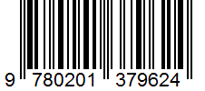 | |
| CODABAR | 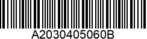 | ITF | 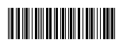 |
| CODE_39 | 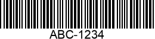 | PDF_417 | 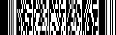 |
| CODE_93 | 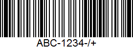 | QR_CODE | |
| CODE_128 | 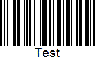 | UPC_A | 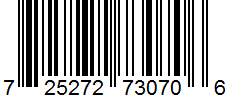 |
| DATA_MATRIX | 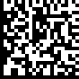 | UPC_E | 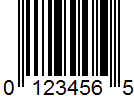 |
| EAN_8 | 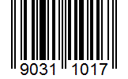 |
Action ScanBarcode()
Der Scan-Vorgang wird am Form über die Action ScanBarcode() gestartet.
Note
Es wird dringend empfohlen, nur diejenigen Barcode-Formate zu übergeben, die auch tatsächlich beim Scan-Vorgang unterstützt werden sollen, um Fehler beim Scannen zu vermeiden. Je geringer die Anzahl der unterstützten Formate ist, desto unwahrscheinlicher ist es, dass der Scan fehlschlägt.
// Aufruf der Action beim Click des Scan-Buttons
protected virtual void FE_btnScanArticle_OnClick(FrameworkButtonClickEventArgs e)
{
this.ScanBarcode(
this.ScanBarcodeCallback,
BarcodeFormat.EAN_8 | BarcodeFormat.EAN_13,
"Article"
);
}
Wenn der Scan-Vorgang am Client abgeschlossen ist, wird die übergebene Callback-Methode aufgerufen. In ihr können die gescannten Daten weiterverarbeitet werden. Der Callback-Methode wird dafür ein Objekt mit dem Typ IFrameworkBarcodeScanInfo übergeben.
// Callback-Methode
protected virtual void ScanBarcodeCallback(IFrameworkBarcodeScanInfo e)
{
if (e.HasError)
{
this.sValue = e.ErrorMessage;
}
else if (e.Cancelled)
{
this.sValue = "Cancelled";
}
else
{
if (e.Identifier == "Article")
{
this.sArticle = e.Value;
}
else
{
this.sAmount = e.Value;
}
this.sFormat = e.Format.ToString();
}
}
Berechtigung für Kamera
Der Barcode Scanner benötigt auf dem mobilen Gerät Zugriff auf die Kamera. Diese muss z.B. auf einem Android-Gerät einmalig erteilt werden:
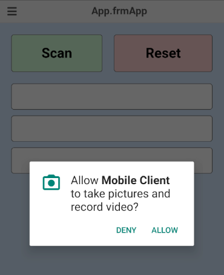